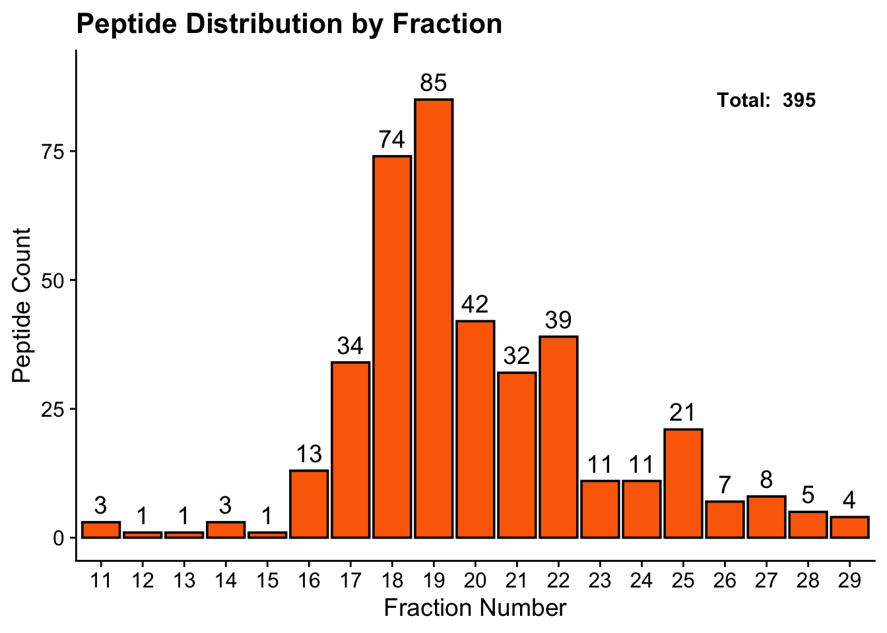

# # 1. Make sure BiocManager itself is installed and current
# if (!requireNamespace("BiocManager", quietly = TRUE))
# install.packages("BiocManager")
#
# # update bioconductor manager
# BiocManager::install(update = TRUE, ask = FALSE)
#
# # 2. Install the two packages
# BiocManager::install(c("clusterProfiler", "org.Hs.eg.db"))Final Report: Looking for COVID Pieces in Plasma
Overview
Schematic
- Process and purify soluble HLA class I using immunoaffinity purification
- Fractionate using HP/LC
- Run on TOF Mass Spec
- Use mass spec analysis software to obtain peptide sequences, source proteins, and genes
- Perform analysis

Install Bioconductor
Load libraries
Get CSV Output from Mass Spec
# read in df
peptides <- read.csv("data/peptideDb.peptides.csv")
# glimpse df
glimpse(peptides)Rows: 2,093
Columns: 28
$ Peptide <chr> "A(+42.01)ANVTPADYAEWSK", "A(+42.01)ARPRDAL", "A…
$ X.10LgP <dbl> 34.33, 24.95, 32.73, 34.15, 34.73, 27.77, 32.36,…
$ Mass <dbl> 1563.7205, 910.4984, 1010.6012, 1463.6544, 1962.…
$ Tag.Length <int> 14, 8, 10, 14, 17, 15, 17, 16, 16, 13, 13, 13, 1…
$ CAA.... <dbl> 35.7, 37.5, 40.0, 28.6, 47.1, 46.7, 47.1, 62.5, …
$ Length <int> 14, 8, 10, 14, 17, 15, 17, 16, 16, 13, 13, 13, 1…
$ Delta.RT <chr> "-11.9480", "17.5813", "-77.7874", "8.5478", "-1…
$ MS2.Correlation <dbl> 0.47, 0.10, 0.26, 0.41, 0.44, 0.68, 0.26, 0.04, …
$ ppm <dbl> -5.5, -2.0, 0.4, 1.8, 6.6, 0.3, -1.4, -8.9, 12.7…
$ m.z <dbl> 782.8632, 456.2556, 506.3080, 732.8373, 982.4172…
$ z <int> 2, 2, 2, 2, 2, 2, 2, 2, 3, 2, 2, 2, 2, 2, 2, 2, …
$ RT <dbl> 55.0110, 41.8248, 51.8708, 48.9945, 50.2847, 49.…
$ Area.Sample.1 <dbl> 306, NA, NA, 3180, 514, 518, 145, 5190, 1890, 69…
$ Intensity.Sample.1 <dbl> 1760, NA, NA, 14100, 4020, 4130, 760, 26600, 105…
$ Scan <int> 8569, 7615, 9622, 9244, 8495, 9448, 10047, 10860…
$ Source.File <chr> "260717_1008_W632_070626_Fxn12.wiff", "260717_10…
$ X.Spec <int> 1, 1, 3, 22, 7, 9, 4, 17, 7, 9, 103, 2, 4, 2, 3,…
$ X.Spec.Sample.1 <int> 1, 1, 3, 22, 7, 9, 4, 17, 7, 9, 103, 2, 4, 2, 3,…
$ X.Feature <int> 1, 0, 0, 8, 2, 1, 1, 4, 5, 5, 31, 2, 1, 2, 3, 0,…
$ X.Feature.Sample.1 <int> 1, 0, 0, 8, 2, 1, 1, 4, 5, 5, 31, 2, 1, 2, 3, 0,…
$ Accession <chr> "Biognosys|iRT-Kit_peptide_10:Q14517|FAT1_HUMAN"…
$ Gene <chr> "FAT1", "DNAAF5", "SCRIB", "", "", "", "", "SIGL…
$ Database <chr> "TARGET", "TARGET", "TARGET", "TARGET", "TARGET"…
$ PTM <chr> "Acetylation (N-term)", "Acetylation (N-term)", …
$ AScore <chr> "A1:Acetylation (N-term):1000.00", "A1:Acetylati…
$ Positional.Confidence <chr> "0 0 0 33 19 3 2 2 0 0 0 0 0 0", "0 0 0 0 0 7 7 …
$ tag...0.0.. <chr> "A(+42.01)ANVTPADYAEWSK", "A(+42.01)ARPRDAL", "A…
$ Found.By <chr> "DeepNovo", "DB Search", "DB Search", "DeepNovo"…Clean the Data
Peptide Length Area.Sample.1 Intensity.Sample.1
1 AARPRDAL 8 NA NA
2 AAFEKQVL 8 1310 10600
3 APLLRWVL 8 9660 50800
4 APNLKSQL 8 2510 11900
5 DAVVKHVL 8 NA NA
6 DLGKKIAL 8 3690 20200
Source.File Accession Gene Found.By
1 260717_1008_W632_070626_Fxn19.wiff Q86Y56|DAAF5_HUMAN DNAAF5 DB Search
2 260717_1008_W632_070626_Fxn18.wiff Q9P2E9|RRBP1_HUMAN RRBP1 DB Search
3 260717_1008_W632_070626_Fxn26.wiff P09601|HMOX1_HUMAN HMOX1 DB Search
4 260717_1008_W632_070626_Fxn17.wiff Q9Y490|TLN1_HUMAN TLN1 DB Search
5 260717_1008_W632_070626_Fxn16.wiff P53621|COPA_HUMAN COPA DB Search
6 260717_1008_W632_070626_Fxn18.wiff O94979|SC31A_HUMAN SEC31A DB Search
accession_clean
1 Q86Y56
2 Q9P2E9
3 P09601
4 Q9Y490
5 P53621
6 O94979Visualize Peptide Distribution Based on Length

Visualize Peptide Distribution based on Fraction

Check for COVID-19 Peptides
# check for any accession value that does not contain human
pep_clean |> filter(!str_detect(Accession, "HUMAN")) [1] Peptide Length Area.Sample.1 Intensity.Sample.1
[5] Source.File Accession Gene Found.By
[9] accession_clean
<0 rows> (or 0-length row.names)- We weren’t able to identify any COVID-19 peptides from our extraction.
Identify 10 Most Abundant Peptides Overall Based on Peak Area
# select for top genes based on sample area
top_area_genes <- pep_clean |>
select(Gene,accession_clean,Area.Sample.1) |>
arrange(desc(Area.Sample.1)) |>
head(11)
genes <- top_area_genes$Gene
# get pathway from API for Gene column using gprofiler
gostres <- gost(query = genes,
organism = "hsapiens",
sources = c("GO:BP", "GO:MF", "GO:CC", "KEGG", "REAC"))
# add pathways to df
gostplot(gostres, capped = TRUE, interactive = TRUE)Warning: The `size` argument of `element_line()` is deprecated as of ggplot2 3.4.0.
ℹ Please use the `linewidth` argument instead.
ℹ The deprecated feature was likely used in the gprofiler2 package.
Please report the issue at <https://biit.cs.ut.ee/gprofiler/page/contact>.Warning: Using `size` aesthetic for lines was deprecated in ggplot2 3.4.0.
ℹ Please use `linewidth` instead.
ℹ The deprecated feature was likely used in the gprofiler2 package.
Please report the issue at <https://biit.cs.ut.ee/gprofiler/page/contact>.# use enrichR
dbs <- c("GO_Biological_Process_2023", "KEGG_2021_Human", "Reactome_2022")
enriched <- enrichr(top_area_genes$Gene, dbs)Uploading data to Enrichr... Done.
Querying GO_Biological_Process_2023... Done.
Querying KEGG_2021_Human... Done.
Querying Reactome_2022... Done.
Parsing results... Done.head(enriched$GO_Biological_Process_2023) Term Overlap
1 Cellular Response To Magnesium Ion (GO:0071286) 1/5
2 Response To Manganese Ion (GO:0010042) 1/5
3 Response To Magnesium Ion (GO:0032026) 1/8
4 Neuron Remodeling (GO:0016322) 1/9
5 Alpha-Linolenic Acid Metabolic Process (GO:0036109) 1/9
6 Very-Low-Density Lipoprotein Particle Assembly (GO:0034379) 1/10
P.value Adjusted.P.value Old.P.value Old.Adjusted.P.value Odds.Ratio
1 0.002497708 0.03695015 0 0 555.1667
2 0.002497708 0.03695015 0 0 555.1667
3 0.003993646 0.03695015 0 0 317.1905
4 0.004491844 0.03695015 0 0 277.5278
5 0.004491844 0.03695015 0 0 277.5278
6 0.004989818 0.03695015 0 0 246.6790
Combined.Score Genes
1 3326.771 SLFN14
2 3326.771 SLFN14
3 1751.859 SLFN14
4 1500.174 C1QA
5 1500.174 SCP2
6 1307.487 APOBIdentify 10 Peptides with Highest Intensity Peaks
# select genes based on intensity
top_intensity_genes <- pep_clean |>
select(Gene, accession_clean,Intensity.Sample.1) |>
arrange(desc(Intensity.Sample.1)) |>
head(10)
genes <- top_area_genes$Gene
# get pathway from API for Gene column using gprofiler
gostres <- gost(query = genes,
organism = "hsapiens",
sources = c("GO:BP", "GO:MF", "GO:CC", "KEGG", "REAC"))
# add pathways to df
gostplot(gostres, capped = TRUE, interactive = TRUE)# use enrichR
dbs <- c("GO_Biological_Process_2023", "KEGG_2021_Human", "Reactome_2022")
enriched <- enrichr(top_area_genes$Gene, dbs)Uploading data to Enrichr... Done.
Querying GO_Biological_Process_2023... Done.
Querying KEGG_2021_Human... Done.
Querying Reactome_2022... Done.
Parsing results... Done.head(enriched$GO_Biological_Process_2023) Term Overlap
1 Cellular Response To Magnesium Ion (GO:0071286) 1/5
2 Response To Manganese Ion (GO:0010042) 1/5
3 Response To Magnesium Ion (GO:0032026) 1/8
4 Neuron Remodeling (GO:0016322) 1/9
5 Alpha-Linolenic Acid Metabolic Process (GO:0036109) 1/9
6 Very-Low-Density Lipoprotein Particle Assembly (GO:0034379) 1/10
P.value Adjusted.P.value Old.P.value Old.Adjusted.P.value Odds.Ratio
1 0.002497708 0.03695015 0 0 555.1667
2 0.002497708 0.03695015 0 0 555.1667
3 0.003993646 0.03695015 0 0 317.1905
4 0.004491844 0.03695015 0 0 277.5278
5 0.004491844 0.03695015 0 0 277.5278
6 0.004989818 0.03695015 0 0 246.6790
Combined.Score Genes
1 3326.771 SLFN14
2 3326.771 SLFN14
3 1751.859 SLFN14
4 1500.174 C1QA
5 1500.174 SCP2
6 1307.487 APOB